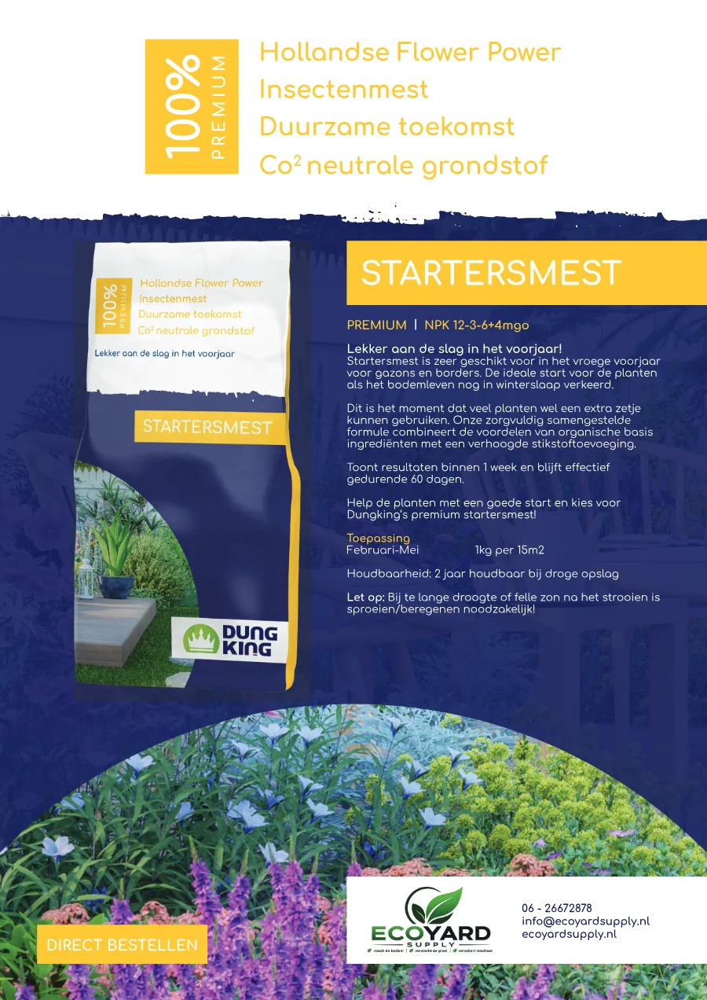
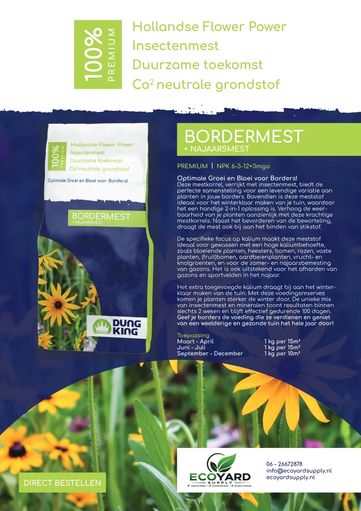
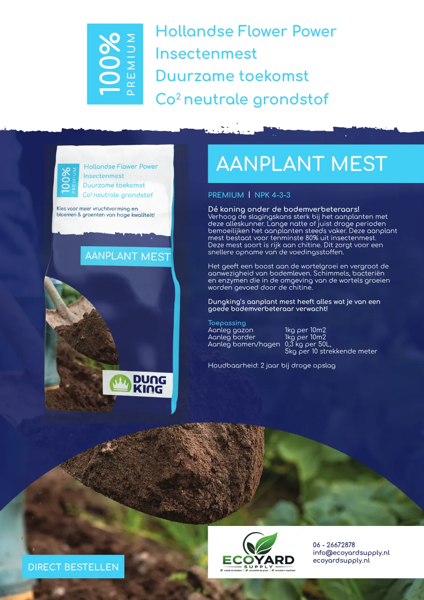
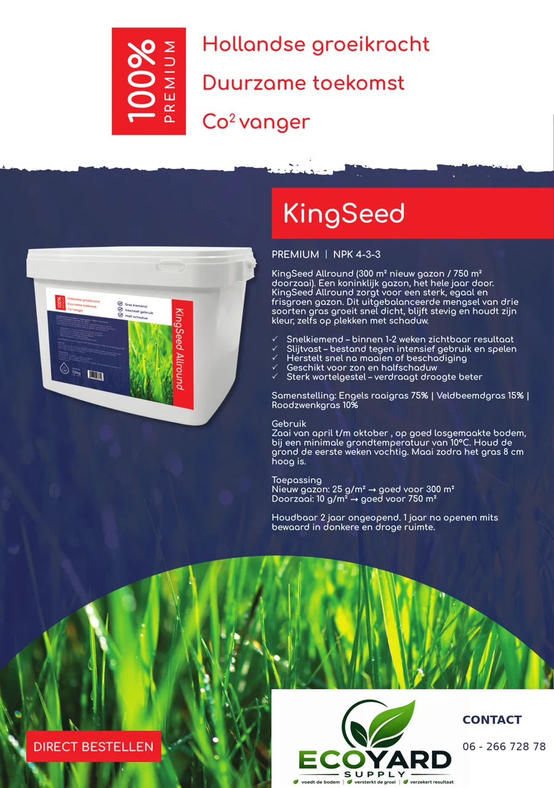

Dungking Startersmest
Vroege start voor gazon en border. Adviesperiode: Februari - mei.
Bekijk product en doseringLees passend gebruiksadviesOns assortiment
Vind Dungking meststoffen, Vitalmix aanplantgrond en KingSeed graszaad voor jouw tuin of project. Kies hieronder de productgroep die bij je vraag past.
50 liter per zak
Een grondmengsel met Baltisch veen middel, Horticompost, Hortivezel, tuinturf middel en Biovin, met toegevoegde bemesting en aanplantmest. Bespreek de toepassing en benodigde hoeveelheid voor jouw project.
Bekijk Vitalmix aanplantgrondDungking
| Product | NPK | Periode | Hoofdtoepassing | Dosering productblad |
|---|---|---|---|---|
| Dungking Startersmest | 12-3-6 + 4MgO | Februari - mei | Vroege start voor gazon en border | 1 kg per 15 m² |
| Dungking Gazonmest | 9-3-6 + 4MgO | Maart-april en juni-juli | Groei, kleur en beworteling van het gazon | 1 kg per 15 m² |
| Dungking Border- en Najaarsmest | 6-3-12 + 3MgO | Maart-april, juni-juli en najaar | Borders, bloei en winterweerbaarheid | 1 kg per 15 m²; najaar 1 kg per 10 m² |
| Dungking Aanplantmest | 4-3-3 | Bij nieuwe aanleg en aanplant | Gazon, graszoden, borders, bomen en hagen | Per toepassing; zie productblad |
Vergelijking gebaseerd op de actuele productinformatie in de aangeleverde Dungking-productbladen. Controleer vóór gebruik altijd de actuele verpakking.
Assortiment

Vroege start voor gazon en border. Adviesperiode: Februari - mei.
Bekijk product en doseringLees passend gebruiksadvies
Groei, kleur en beworteling van het gazon. Adviesperiode: Maart-april en juni-juli.
Bekijk product en doseringLees passend gebruiksadvies
Borders, bloei en winterweerbaarheid. Adviesperiode: Maart-april, juni-juli en najaar.
Bekijk product en doseringLees passend gebruiksadvies
Gazon, graszoden, borders, bomen en hagen. Adviesperiode: Bij nieuwe aanleg en aanplant.
Bekijk product en doseringLees passend gebruiksadviesVoor nieuwe aanleg en doorzaai
Bekijk het graszaad en kies de hoeveelheid die past bij jouw gazon.

Graszaad · 7,5 kg
Grasmengsel voor zon en halfschaduw. Eén verpakking is bij de richtlijn van 25 g/m² voldoende voor 300 m² nieuw gazon, of bij 10 g/m² voor 750 m² doorzaai.
Lees ook wanneer je graszaad zaait en hoeveel graszaad je per m² nodig hebt.
Persoonlijk advies
Stuur toepassing, oppervlak, bodemtype, foto's en gewenste uitvoerdatum. Eco Yard Supply denkt mee vanuit Landhorst voor projecten in Noord-Brabant.